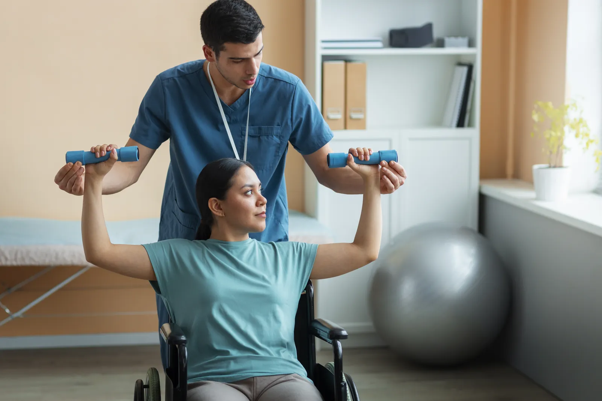
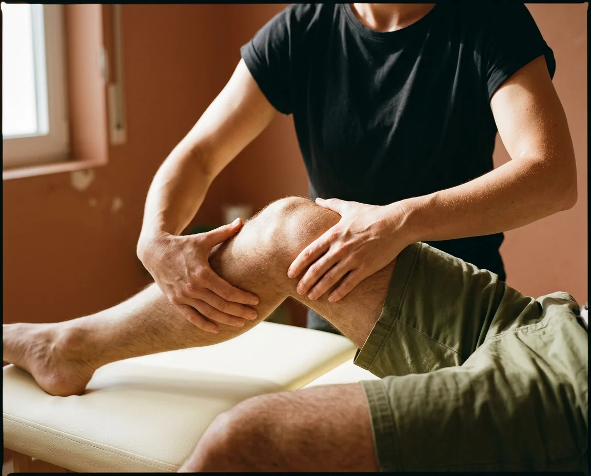
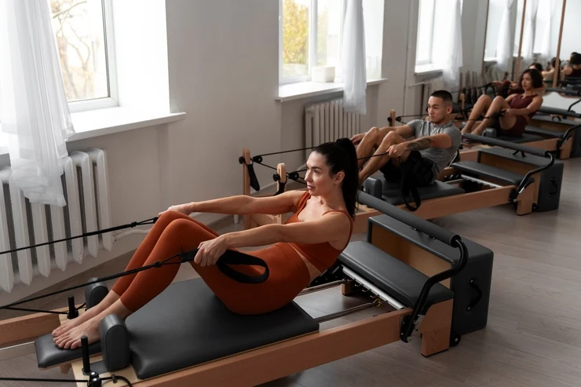
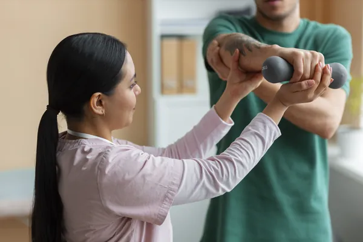
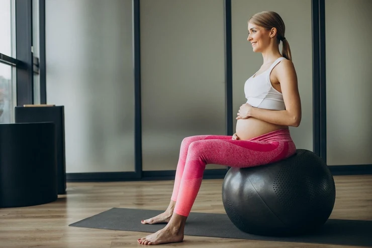
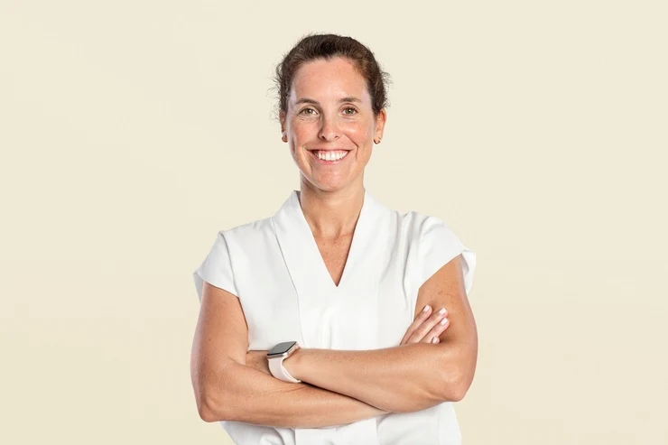

Região
Lombar
A queixa número um do estúdio. Começamos com teste de mobilidade e controle motor do core, liberação miofascial e, a partir da 3ª sessão, pilates terapêutico no reformer.
- Sessões médias
- 10–12
- Foco
- Core & quadril
(01) — Estúdio clínico desde 2016
Fisioterapia ortopédica, esportiva e pilates clínico com avaliação biomecânica completa. Turmas de no máximo 3 alunos e um plano que cabe na sua rotina.
Avaliação inicial→
Estúdio Savassi — 240 m²
No máximo 3 alunos por turma. Sempre com fisioterapeuta.
(02) — Mapa da dor
Toque na região e veja como começamos o seu tratamento.
Região
A queixa número um do estúdio. Começamos com teste de mobilidade e controle motor do core, liberação miofascial e, a partir da 3ª sessão, pilates terapêutico no reformer.
(03) — Serviços

01Dor crônica, hérnias, tendinites e lesões articulares.
↗Retorno ao esporte, corrida, crossfit e prevenção de lesões.
↗
03Reformer, cadillac e chair com turmas de até 3 alunos.
↗
04Protocolos alinhados com o seu ortopedista, semana a semana.
↗
05Do 2º trimestre ao pós-parto, com fisioterapeuta pélvica.
↗(04) — Método Raiz

Entrevista, testes funcionais, análise de marcha e postura em vídeo. Você sai com um laudo claro e objetivos medidos.
Terapia manual, recursos eletrotermofototerapêuticos e educação em dor para baixar a intensidade nas primeiras semanas.
Exercício progressivo, com carga e pilates nos aparelhos. A dor diminui quando o corpo fica mais capaz.
Alta com plano de manutenção — no estúdio, na academia ou em casa, com vídeos personalizados.
(05) — Planos de pilates
Mensal
R$390
Sem fidelidade. Ideal para conhecer o método.
Trimestral · mais escolhido
R$350
Reavaliação inclusa no fim do ciclo.
Semestral
R$320
Duas reavaliações e uma sessão de fisio avulsa.
Valores mensais fictícios, para fins de demonstração.